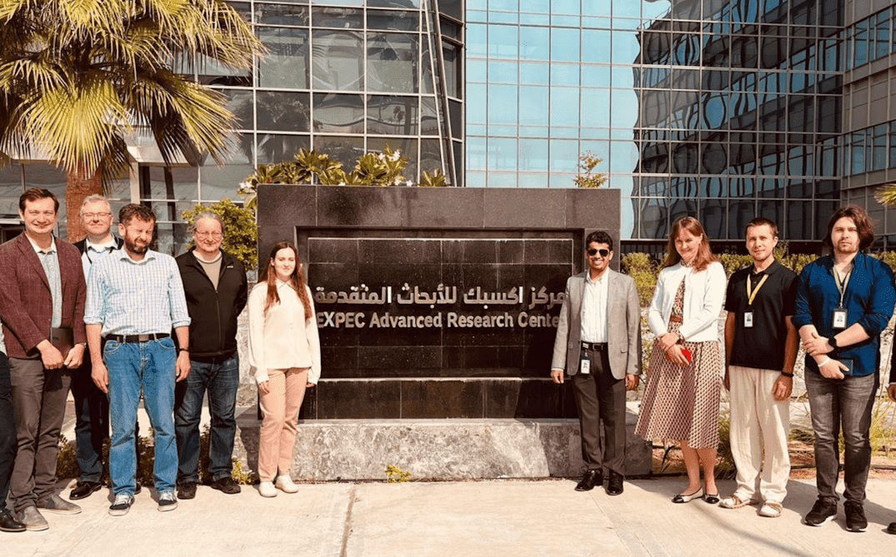
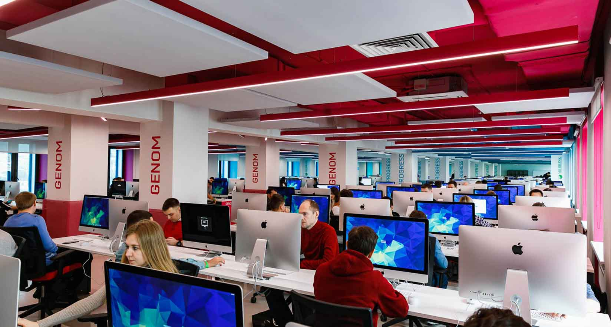

MATCH
Приложение для знакомств
Юрий Майоров
Open To Work
Привет! Я Fullstack‑разработчик с более чем 5‑летним опытом работы над проектами со сложной распределённой архитектурой, где применяются машинное обучение, искусственный интеллект и ресурсоёмкие вычисления в нефтегазовой отрасли. Работаю в крупнейшей в мире нефтегазовой компании. Открыт для новых профессиональных вызовов и интересных проектов.
Модульный super-app для нефтегазовой отрасли, объединяющий сервисы ML Driven Flow Metering, Flow Simulation, Asset Management, Production Optimization и другие в единую систему управления промысловыми операциями.

The Exploration and Petroleum Engineering Center - Advanced Research Center
(EXPEC ARC)
📍 Дахран, Саудовская Аравия
Saudi Aramco это государственная нефтяная и газовая компания, которая является национальной нефтяной компанией Саудовской Аравии. На 2022 год она является второй по величине компанией в мире по выручке
Внедрение платформы позволило сократить операционные расходы на $15 млн ежегодно за счет автоматизации рутинных задач и повышения качества принятия решений на основе данных.
Сервис виртуального измерения дебита на основе машинного обучения, объединяющий physics-based модели с ML-алгоритмами для мониторинга многофазных потоков в реальном времени.
Применение ML Driven Virtual Flow Metering вместо физических расходомеров стоимостью $500k+ обеспечивает экономию до $3 млн ежегодно на одной крупной платформе за счет снижения расходов на обслуживание оборудования, сокращения простоев и повышения точности планирования.
Симулятор многофазных потоков для моделирования гидродинамических процессов на основе дебита, PVT-свойств, геометрии системы и других параметров (аналог Schlumberger PIPESIM и OLGA).
Разработка позволила частично отказаться от дорогостоящих коммерческих лицензий, обеспечив экономию ~$2 млн в год.
Также участвовал в проектах с использованием TensorFlow, OpenCV, Three.js, D3.js: разработка системы интеллектуального анализа геологических данных GeoMind с автоматической интерпретацией сейсмики на базе transformer-моделей, сервиса оптимизации размещения скважин и системы планирования разработки месторождений.
FREELANCE TEAM
2019 - 2022
Кампус 42 в Париже (NOC) и Forty2 - внешний кампус с видом на Форт Боярд
Сегодня сеть 42 охватывает десятки государств и формирует глобальное сообщество студентов и выпускников. Кампусы действуют в Европе, Северной и Южной Америке, Африке и Азии; первые появились в Париже и Сан-Франциско, далее сеть расширилась на страны ЕС (включая Германию, Нидерланды, Бельгию, Испанию, Португалию, Финляндию), Восточную Европу (включая Румынию, Болгарию), а также ЮАР и ряд локаций в Латинской Америке и Азии.
Приложение для знакомств
Проект, похожий на Snapchat

Мой локатор для 42 Ecole
Приложение для спутниковых приемников GS
Выбор цветовой схемы для вашего Instagram
Мои проекты в Институте травматологии

Приложение-компаньон для Watts Battery
Если вам требуется мое резюме в формате PDF, пожалуйста, напишите мне в Telegram (@Jim_Root) или на email